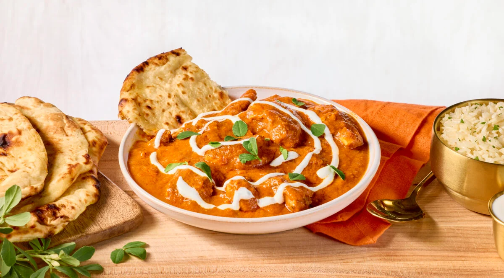

Donttblink's Butterchicken

Description
A fragrant and rich tasting simple curry that takes traditional indian spices and the subtle sweet and richness from butter and tomato puree to create a creamy and silky smooth dish
Make sure to marinate the chicken overnight for the best possible flavour
Ingredients
Butter Chicen Sauce
- 950g boneless skinless chicken breast
- 500 ml tomato passata
- 1 cinnamon stick
- 1 green chili
- 6 cardamom pods
- 3 pieces of clove
- 3 tbsp of butter (to start the sauce)
- 2 tbsp of butter (to finish the sauce)
- 2 tbsp minced garlic
- 2 tsp minced ginger
- 30 cashews
- 2 tsp Kashmiri chili powder
- 1 tsp sugar
- 2 cups water
- 1 tsp garam masala
- 1/4 heavy cream
- 1-2 tsp salt
Chicken Marinade
- 2 tbsp fresh squeezed lemon juice
- 3 tsp Kashmiri chili powder
- 1 tsp kosher salt
- 1/3 cup Greek yogurt
- 2 tbsp avocado oil
- 1 tsp ground fenugreek (leaves would be preferred)
- 2 tsp turmeric powder
- 3 tbsp minced garlic
- 1 tbsp minced ginger
- 2 tsp garam masala
Steps
- Marinade the butter chicken in lemon juice kashmiri chili and salt for 20 minutes
- Add chicken to second marinade of yogurt, oil, garlic, ginger, garam masala, tumeric and fenugreek. Mix and cover chicken well and refrigerate over night for best results
- Place marinated chicken spread well on baking pan and broil on high for 5 minutes or until chicken starts to brown. Do not cook chicken all the way through
- Add tomato paste, water and milk and bring to boil.
- Bring down to a simmer and cook for 30 minutes to 3 hours depending on strength of flavour incorporation. Season to taste.
Home